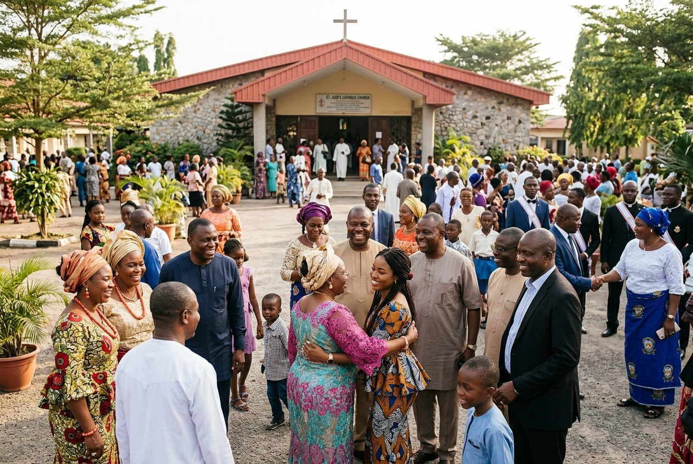
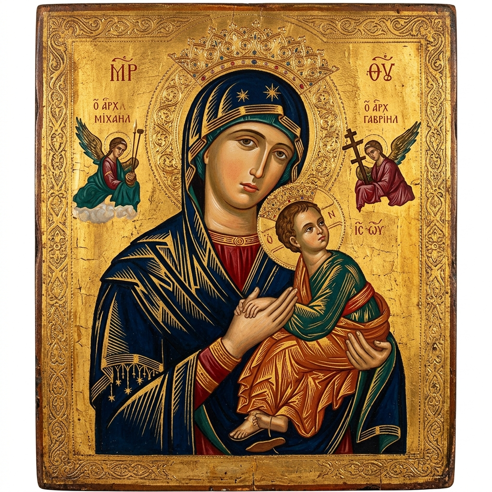
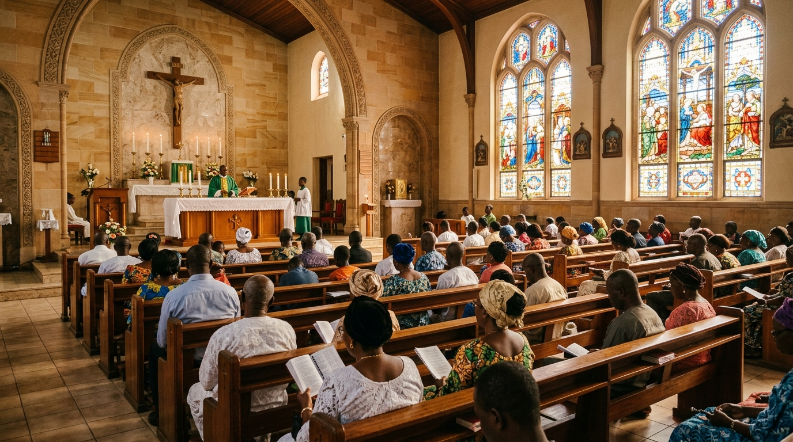
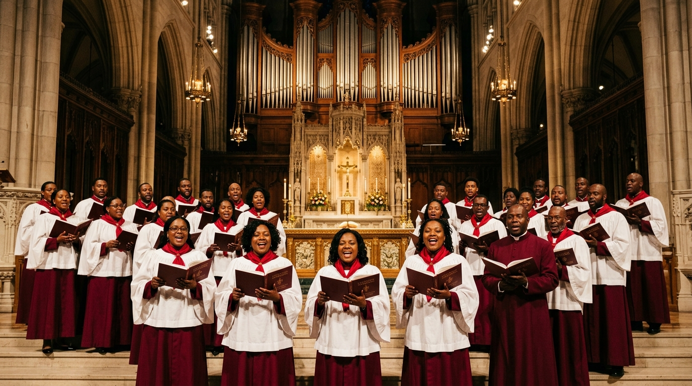

1
First Reading
Wis 7:7–11
Ψ
Responsorial Psalm
Psalm 90 (89)
2
Second Reading
Heb 4:12–13
✝
Holy Gospel
Mark 10:17–30
Sunday, 11 October 2026 • Msugh u Bem ngu a ven
Rosary, Divine Mercy & Tiv devotions
Weekday, Sunday & Confessions schedule
Live stream & recorded homilies
Parish notices, societies & banns

Join us for prayer, high solemn Mass, and community fellowship at the Cathedral.
"I prayed, and prudence was given me; I pleaded, and the spirit of wisdom came to me."
— Wisdom 7:7
I prayed, and prudence was given me; I pleaded, and the spirit of wisdom came to me. I preferred her to scepter and throne, and deemed riches nothing in comparison with her, nor did I liken any priceless gem to her; because all gold, in view of her, is a little sand, and before her, silver is to be accounted mire.
Beyond health and comeliness I loved her, and I chose to have her rather than the light, because the splendor of her never yields to sleep. Yet all good things together came to me in her company, and countless riches at her hands.
Teach us to number our days aright, that we may gain wisdom of heart.
Return, O Lord! How long? Have pity on your servants!
R. FILL US WITH YOUR LOVE, O LORD, AND WE WILL SING FOR JOY!
Fill us at daybreak with your kindness, that we may shout for joy and gladness all our days.
Make us glad, for the days when you afflicted us, for the years when we saw evil.
R. FILL US WITH YOUR LOVE, O LORD, AND WE WILL SING FOR JOY!
Let your work be seen by your servants and your glory by their children;
and may the gracious care of the Lord our God be ours; prosper the work of our hands for us! Prosper the work of our hands!
R. FILL US WITH YOUR LOVE, O LORD, AND WE WILL SING FOR JOY!
Brothers and sisters: Indeed the word of God is living and effective, sharper than any two-edged sword, penetrating even between soul and spirit, joints and marrow, and able to discern reflections and thoughts of the heart.
No creature is concealed from him, but everything is naked and exposed to the eyes of him to whom we must render an account.
"Alleluia, Alleluia! Blessed are the poor in spirit, for theirs is the kingdom of heaven. Alleluia."
As Jesus was setting out on a journey, a man ran up, knelt down before him, and asked him, "Good teacher, what must I do to inherit eternal life?" Jesus answered him, "Why do you call me good? No one is good but God alone. You know the commandments: You shall not kill; you shall not commit adultery; you shall not steal; you shall not bear false witness; you shall not defraud; honor your father and your mother."
He replied and said to him, "Teacher, all of these I have observed from my youth."
At that statement his face fell, and he went away sad, for he had many possessions. Jesus looked around and said to his disciples, "How hard it is for those who have wealth to enter the kingdom of God!"
Peter began to say to him, "We have given up everything and followed you." Jesus said, "Amen, I say to you, there is no one who has given up house or brothers or sisters or mother or father or children or lands for my sake and for the sake of the gospel who will not receive a hundred times more now in this present age, and eternal life in the age to come."
"True wealth lies not in worldly possessions, but in our willingness to surrender our hearts to Christ in humble obedience."
Curate & Youth Chaplain · OLPH Cathedral Makurdi

Patronal Novena"Mother of Perpetual Help, you have been blessed by God and made sovereign distributor of His graces..."
Chapel of the Blessed Sacrament. Streamed audio & silent meditation.
Meditation on the Annunciation, Visitation, Nativity, Presentation, and Finding in the Temple.
"For the sake of His sorrowful Passion..."
Via Crucis with traditional prayers
Saves mobile data on 3G/4G network

Celebrant: Most Rev. Wilfred Chikpa Anagbe, CMF · Cathedral of Makurdi

18 hymnsCathedral Pulpit • 1.5k views • 3 days ago
Our Lady's Guild • 2.5k views • 6 days ago
Cecilian Choristers • 3.9k views • 1 week ago
"Faith comes from hearing, and hearing through the word of Christ."
— Romans 10:17
Catholic Diocese of Makurdi, Nigeria • Est. 1958
Daily 6:30am • Sunday 7:00am, 9:30am, 5:30pm
Quiet prayer, access guidelines & roster
Baptism, Holy Matrimony, Sick Calls
CMO, CWO, CYON Youth, Legion of Mary...
Sunday Bulletin PDF • 16th October...
Upcoming Parish Harvest, Novenas, Retreats...
Zenith Bank • OLPH Cathedral Makurdi
For Cathedral Restoration & Sanctuary upkeep, add narration: "BUILDING-FUND".
Thanksgiving, Memorials, Healing & Special Intentions
Cathedral Administrator & Associate Priests
P.O. Box 1954, Makurdi, Benue State, Nigeria.
⏱ Mon – Fri: 8:30 AM – 4:00 PM
Fundamental invocation of the Holy Trinity.
Cathedral Way / Wurukum Roundabout, Makurdi, Benue State.
Tiv Language · Main Cathedral Sanctuary
English Language · Choral High Mass
Youth & Children Mass · English & Tiv
Eucharistic Exposition & Benediction
Chapel of Adoration · Followed by Angelus
Midday Angelus & Mass for Workers
Perpetual Help Novena Mass & Blessings
Most Rev. Wilfred Chikpa Anagbe, CMF · Catholic Bishop of Makurdi
"Beloved in Christ, our Lord warns us today of trusting in transient wealth. Rather let us be rich in good works, in unity, and in support of our diocese's spiritual mission."
Meeting holds this Sunday immediately after 8:00 AM Mass at the Cathedral Hall.
Mr. Terver Emmanuel Iorliam & Miss Dooshima Clara Tyover. Please inform the clergy of any impediment.
Ongoing at the parish office. Rehearsal on Saturday at 10:00 AM.
Meets 2nd Sunday of every month · 11:30 AM
Meets 1st Sunday of every month · 11:30 AM
Every Sunday after 10:00 AM Mass · Youth Centre
Tuesdays & Saturdays 5:00 PM · Marian Grotto
Rehearsals Thursdays & Saturdays 5:30 PM
Offer Holy Mass at Our Lady of Perpetual Help Cathedral, Makurdi.
Catholic Bishop of Makurdi
Diocesan Bishop & Chief Shepherd
Cathedral Administrator
Head of Cathedral Pastoral Administration
Assistant Cathedral Administrator
Assistant Cathedral Administrator
Assistant Cathedral Administrator
For the Anointing of the Sick or urgent Viaticum:
Celebrant: Most Rev. Wilfred Chikpa Anagbe, CMF · Cathedral of Makurdi
Recite the midday Angelus prayer with our parish.
Bishop Wilfred Chikpa Anagbe is celebrating Mass.
Continue your 9-day devotion to Our Lady of Perpetual Help.
Our Lady of Perpetual Help Cathedral, Makurdi
Registered at Cathedral Parish Archives
Catholic Youth Organisation of Nigeria (CYON)